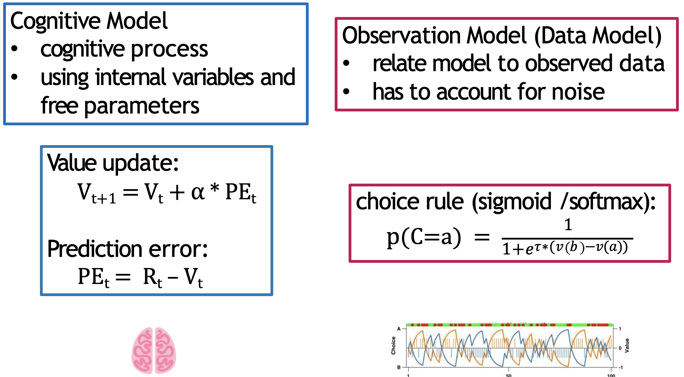
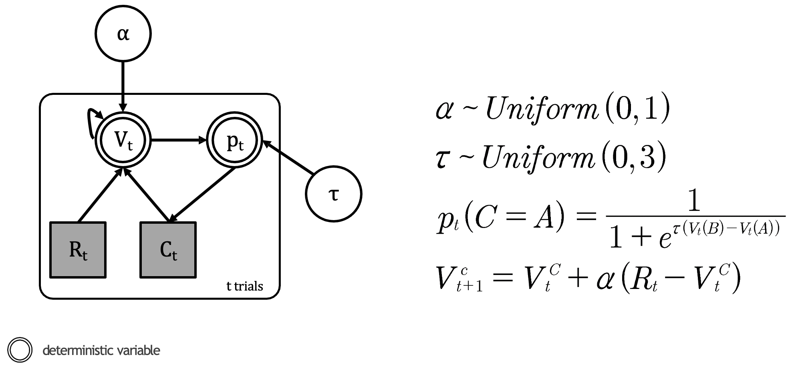
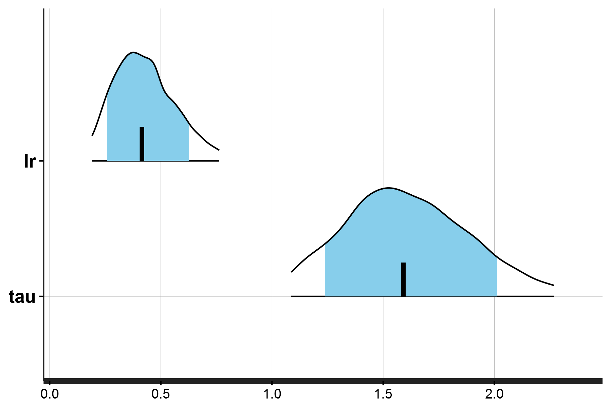
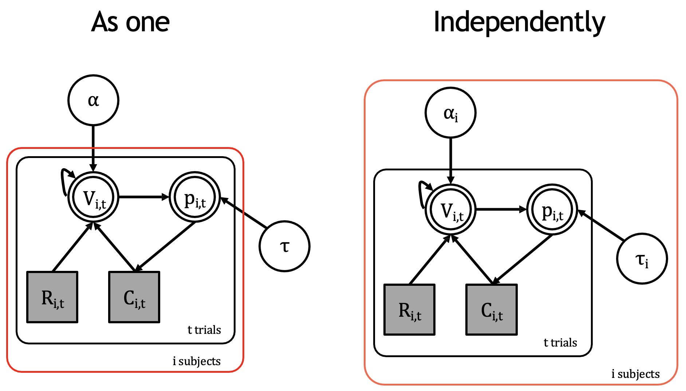
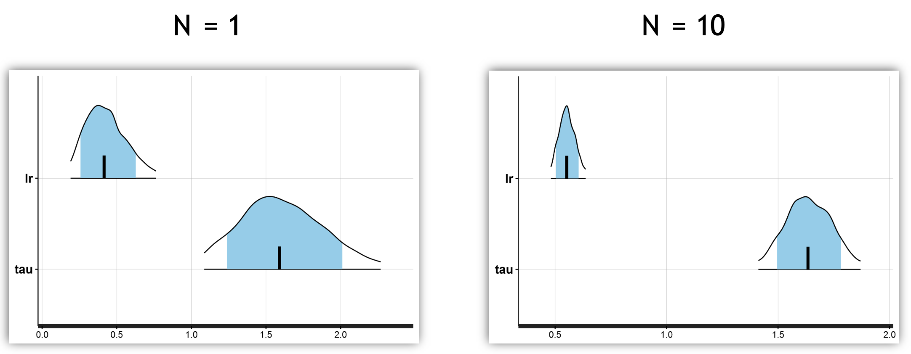
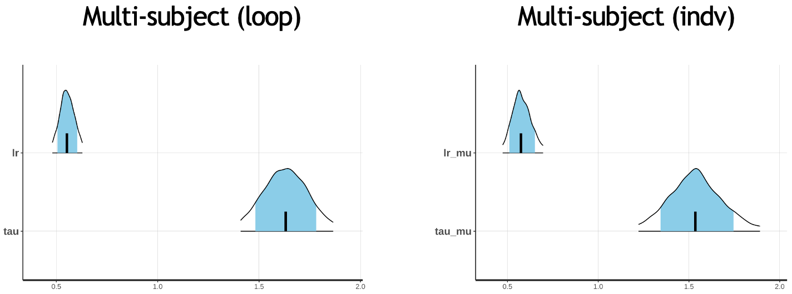

Implementing the Rescorla-Wagner model in Stan
Fitting subjects at the individual and group level
We now have the underlying structure of our computational model, consisting of the Rescorla-Wagner model and the softmax choice rule:

The RW model represents the latent cognitive processes driving learning and valuation, whilst the softmax translates this behaviour into observed choices
Let’s now implement this practically in Stan. Again, we we have done in previous cases, let’s first visually depict our model in the graphical format:

Our RL model consisting the Rescorla-Wagner update and softmax choice rule
Within our model we have the following:
Parameters (white circles):
\(α\) (learning rate): A continuous parameter bounded between 0 and 1
Represented by: \(α\) ~ \(Uniform(0,1)\)
This is unobserved - we’ll need to estimate it from the data
\(τ\) (temperature): A continuous parameter bounded between 0 and \(x\), where \(x < \infty\) (in this example 3)
Represented by: \(τ\) ~ \(Uniform(0,3)\)
Also unobserved and needs to be estimated
Observed variables (grey squares):
\(R_t\) (reward): A discrete variable representing the outcome on each trial
\(C_t\) (choice): A discrete variable representing which option was selected on each trial
Deterministic variables (double circles):
\(V_t\) (value): A continuous variable representing the expected value of each option
\(p_t\) (probability): A continuous variable representing the probability of selecting each option
Whilst the learning rate is always bounded between 0 and 1, the inverse temperature parameter is not necessarily bounded. The theoretical range of this parameter is \([0, +∞]\), yet in practice, it is suggested to introduce an upper limit to avoid unstable model estimation. Some have suggested a reasonable range to be \([0, 10]\)1.
Constructing the Rescorla-Wagner model for a single subject
Let’s firstly fit this model to a single participant. The data (_data/rl_sp_ss.RData) is structured as follows:
> head(rl_ss)
[,1] [,2]
[1,] 2 -1
[2,] 1 1
[3,] 1 1
[4,] 1 1
...
[97,] 1 -1
[98,] 2 -1
[99,] 1 1
[100,] 1 1We just have data for 100 trials consisting of two unnamed columns corresponding to choice (1 or 2) and reward (-1 or +1). Recall that the behavioural task in this instance does not feature reversals.
A simple implementation of a RL model - consisting the RW update and softmax choice rule - for this single participant is located within the following script (_scripts/my_1st_rw.stan).
Let’s break it down block-by-block:
In the data block we declare what data we’ll feed into our model:
data {
int<lower=1> nTrials;
int<lower=1,upper=2> choice[nTrials];
int<lower=-1,upper=1> reward[nTrials];
} nTrials: An integer declaring the number of trials. We bound it to be at least 1 since we need data to fit the model.choice: An array of integers with lengthnTrials. Each element must be either 1 or 2, representing which option was chosen.reward: An array of integers with lengthnTrials. Each element must be either -1 or 1, representing losses and wins respectively.
Then in the parameters block we declare the parameters we want to estimate:
parameters {
real<lower=0,upper=1> alpha; // learning rate
real<lower=0,upper=20>tau; // softmax inv.temp.
}alpha: The learning rate, bounded between 0 and 1tau: The inverse temperature parameter, bounded between 0 and 20
Finally, the model block implements the actual Rescorla-Wagner model:
model {
real pe;
vector[2] v;
vector[2] p;
for (t in 1:nTrials) {
p = softmax( tau * v); // action probability computed via softmax
choice[t] ~ categorical(p);
pe = reward[t] - v[choice[t]]; // compute pe for chosen value only
v[choice[t]] = v[choice[t]] + alpha * pe; // update chosen V
}
}First, we declare the local variables:
pe: A scalar to store the prediction errorv: A vector of length 2 to store value estimates for both optionsp: A vector of length 2 to store choice probabilities
The main loop then iterates through trials and implements our RL model:
p = softmax(tau * v): Converts values to probabilities using the softmax function, multiplying bytauto implement the temperature scalingchoice[t] ~ categorical(p): Tells Stan that choices are distributed according to our computed probabilitiespe = reward[t] - v[choice[t]]: Computes the prediction error for the chosen optionv[choice[t]] = v[choice[t]] + alpha * pe: Updates the value estimate using the Rescorla-Wagner equation
Most RL models build upon the RW equation, but retain it at their core. Take for example the case where we aim to incorporate separate learning rates, for negative and positive outcomes. In our model, we would make the following changes:
- Rename the existing learning rate parameter to
alpha_posand introduce a new learning rate for negative outcomesalpha_neg.
parameters {
real<lower=0,upper=1> alpha_pos; // rename existing learning rate
real<lower=0,upper=1> alpha_neg; // add negative-trial learning rate
real<lower=0,upper=20>tau;
}- And then in the
modelblock, create a for loop to calculatev[choice[t]]with the appropriate learning rate depending on the outcome:
model {
real pe;
vector[2] v;
vector[2] p;
for (t in 1:nTrials) {
p = softmax(tau * v);
choice[t] ~ categorical(p);
pe = reward[t] - v[choice[t]];
if (reward[t] > 0)
v[choice[t]] = v[choice[t]] + alpha_pos * pe; // update with positive learning rate
else
v[choice[t]] = v[choice[t]] + alpha_neg * pe; // update with negative learning rate
}
}We will demonstrate this by developing more complex models in future workshops.
So now that we have our Stan model completed, we can run it in R.
The script to do so is (_scripts/reinforcement_learning_single_parm_main.R).
Within this script, we need to firstly load the data and perform some pre-processing (renaming columns) before saving it as a data list:
# load the data and assign
load('_data/rl_sp_ss.RData')
sz <- dim(rl_ss)
nTrials <- sz[1]
dataList <- list(nTrials=nTrials,
choice=rl_ss[,1],
reward=rl_ss[,2])Looking at the data now, it makes more sense than before:
> str(dataList)
List of 3
$ nTrials: int 100
$ choice : num [1:100] 2 1 1 1 2 1 1 1 1 1 ...
$ reward : num [1:100] -1 1 1 1 -1 1 1 -1 -1 1 ...We just need to declare which model we want to use. For now, we want to run the model for a single subject:
modelFile <- '_scripts/reinforcement_learning_sp_ss_model.stan`with the rest of the script setting the various components of our sampling approach as encountered in earlier workshops.
The single-subject Stan model that we are using in the script (_scripts/reinforcement_learning_sp_ss_model.stan) is slightly different to the one explained above. In this version we:
Provide initial choice values of 0 in a transformed data block:
transformed data {
vector[2] initV; // initial values for V
initV = rep_vector(0.0, 2);
}Keep track of values at every trial:
model {
vector[2] v[nTrials+1]; // Creates an array of nTrials+1 vectors, each vector has 2 elements
...
v[1] = initV; // Sets initial values
for (t in 1:nTrials) {
...
v[t+1] = v[t]; // Copies current trial's values to next trial
v[t+1, choice[t]] = v[t, choice[t]] + lr * pe[t]; // Updates chosen value for next trial
}
}There are smaller changes (i.e., the categorical_logit), but these are the main two of note.
The R script is enveloped in a wrapper function, which runs the model either for an individual or for multiple subjects. You can simply run it for individuals as it is (i.e., with multiSubj = FALSE), or simply by highlighting and running the three components for the individual subject model.
For example, to load and assign the data to a data list, just highlight and run the following code inside the if-else statement:
load('_data/rl_sp_ss.RData')
sz <- dim(rl_ss)
nTrials <- sz[1]
dataList <- list(nTrials=nTrials,
choice=rl_ss[,1],
reward=rl_ss[,2])1. Run the R script specifically for the model reinforcement_learning_sp_ss_model.stan. Examine the traceplot and posterior density plot for the learning rate and inverse temperature.
After running the model, you should get the following posterior density distribution for the learning model and inverse temperature parameters:

Posterior density distributions for the learning rate and inverse temperature parameters (single subject)
Fitting multiple subjects
The model above estimates the latent parameters for a single individual. Of course, most studies involve more than one person, and so we would like to estimate parameters for a group of individuals rather than a single subject.
There are several ways to do this.

Two methods for implementing the Rescorla-Wagner model across multiple subjects
Firstly, you could implement a subject-loop depicted on the left diagram above. However, this approach assumes a single learning rate and single inverse temperature for all participants. It essentially forces the model to find “average” parameters that might not represent any actual subject well. This is equivalent to modeling a hypothetical same-person completing the task \(n\) times.
On-the-other-hand, you could also fit multiple participants independently (right side), which assumes that each person has their own learning rate and inverse temperature. This is clearly a much better approach as it takes into account individual differences in cognition.
1. Examine the Stan code and run both models using the provided scripts and data. Examine the posterior density distribution and MCMC trace plots for each.
Use the following scripts:
Stan models:
Subject-loop:
_scripts/reinforcement_learning_sp_ms_model.stanIndividual fitting:
_scripts/reinforcement_learning_mp_indv_model.stan
R scripts:
Subject-loop:
_scripts/reinforcement_learning_single_parm_main.R(remember to load inrl_sp_ms.RData)Individual fitting:
_scripts/reinforcement_learning_multi_parm_main.R
2. How does the posterior density plots differ between running the model for a single participant and for multiple subjects using a subject-loop?

You can see the HDI is narrower for both parameters when observing the results from 10 subjects versus a single subject.
3. How does the posterior density plots differ between running the model for multiple subjects using a subject-loop and individually fitting parameters?

There doesn’t look like much of a difference, but we will examine this further in the next workshop.
Footnotes
Zhang, L., Lengersdorff, L., Mikus, N., Gläscher, J., & Lamm, C. (2020). Using reinforcement learning models in social neuroscience: frameworks, pitfalls and suggestions of best practices. Social Cognitive and Affective Neuroscience, 15(6), 695-707.↩︎